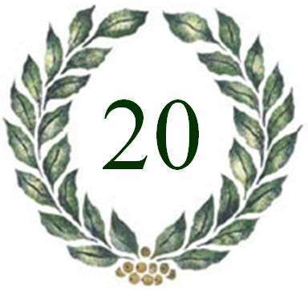

|  | Uitslag 20ste FAMILIEQUIZ (vrijdag 25 februari 2011) |
| Plaats | Nr | Ploegnaam | Totaal |
| 1 | 19 | NFP | 124 |
| 2 | 37 | Soep met letterkes | 113* |
| 3 | 9 | Schol | 113* |
| 4 | 21 | Tsjinglepipikoekoek | 110* |
| 5 | 29 | Sjareltje Vuylsteke | 110* |
| 6 | 46 | AmbitiousButRubbish | 107* |
| 7 | 6 | Vat vol kennis | 107* |
| 8 | 15 | Roma Victor! | 103* |
| 9 | 16 | De herrezen glorie | 103* |
| 10 | 27 | Sagbi’s for life | 102 |
| 11 | 14 | Niveau nihil | 101* |
| 12 | 5 | OC-mix | 101* |
| 13 | 35 | Mag ik een hulplijn? | 101* |
| 14 | 12 | De wissen | 101* |
| 15 | 38 | Kleurenwhist | 100 |
| 16 | 33 | Turbo Turbo | 97* |
| 17 | 8 | El Trulli | 97* |
| 18 | 44 | Krek wak wou | 96 |
| 19 | 10 | Balls of beauty | 94 |
| 20 | 51 | De nieuwe regering | 93* |
| 21 | 20 | De belspeldelletjes | 93* |
| 22 | 40 | Ndragheta | 89* |
| 23 | 43 | Kalfke Willy | 89* |
| 24 | 31 | Pinky & the brains | 89* |
| 25 | 24 | Het N zonnebloempje | 87* |
| 26 | 28 | De afrekening | 87* |
| 27 | 2 | E = mc² | 87* |
| 28 | 13 | Het M zonnebloempje | 87* |
| 29 | 45 | Forever Young | 87* |
| 30 | 22 | Katastroof | 86 |
| 31 | 7 | Kwoudaketquizt | 84* |
| 32 | 32 | Whubuk | 84* |
| 33 | 41 | Koken met je-zus | 82 |
| 34 | 25 | Die Mannschaft | 81 |
| 35 | 48 | MIA | 79* |
| 36 | 3 | Rolfmao | 79* |
| 37 | 42 | Kool & The Gang | 77* |
| 38 | 39 | Eyjafjallajökull | 77* |
| 39 | 50 | De grote gezinnen | 74 |
| 40 | 30 | Bastacuda | 71* |
| 41 | 34 | De Vuylstekeprutsers | 71* |
| 42 | 36 | Call of beauty | 70 |
| 43 | 26 | Het P zonnebloempje | 69* |
| 44 | 17 | Eyjafjallajökull 2 | 69* |
| 45 | 1 | De durvers | 63* |
| 46 | 23 | De badeendjes | 63* |
| 47 | 11 | Zele plus | 62* |
| 48 | 47 | Be Happy Go Lucky | 62* |
| 49 | 4 | Suzi Wan | 56 |
| 50 | 18 | De slimste vrouwen | 52 |
| 51 | 49 | De Lausnay Nelis | 40 |